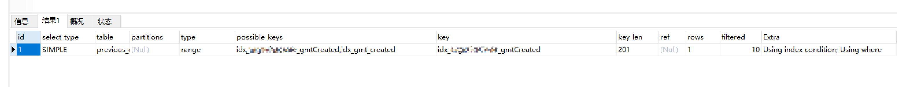
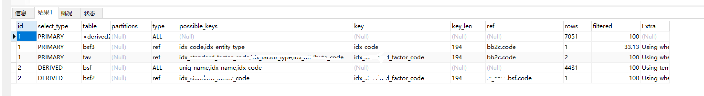
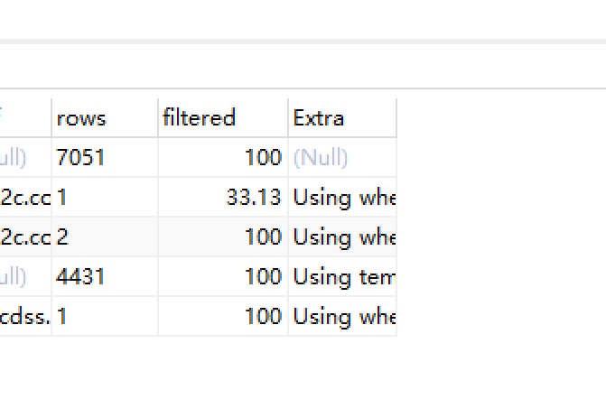
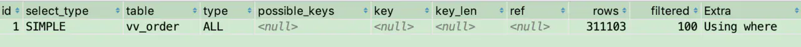
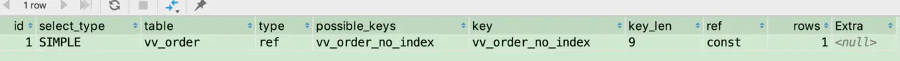

SQL优化及其他
SQL优化的一般策略：索引优化，sql改写，参数优化，优化器
在介绍优化之前，先介绍Mysql的explain
explain
explain显示了mysql如何使用索引来处理select语句以及连接表。可以帮助选择更好的索引和写出更优化的查询语句。
使用方法，在select语句前加上explain就可以了。

expain出来的信息有10列，分别是
id、
select_type、
table、
type、
possible_keys、
key、
key_len、
ref、
rows、
Extra,
下面对这些字段出现的可能进行解释：
id
SQL执行的顺序的标识,id越大越先执行
id相同时，执行顺序由上至下
如果是子查询，id的序号会递增，id值越大优先级越高，越先被执行
id如果相同，可以认为是一组，从上往下顺序执行；在所有组中，id值越大，优先级越高，越先执行
针对一条SQL的explain ,针对4张表的复杂sql查询

select_type
显示查询中每个select子句的类型
(1) SIMPLE(简单SELECT,不使用UNION或子查询等)
(2) PRIMARY(查询中若包含任何复杂的子部分,最外层的select被标记为PRIMARY)
最外层的select.例如:
mysql> explain select * from (select * from t3 where id=3952602) a ;
+—-+————-+————+——–+——————-+———+———+——+——+——-+
| id | select_type | table | type | possible_keys | key | key_len | ref | rows | Extra |
+—-+————-+————+——–+——————-+———+———+——+——+——-+
| 1 | PRIMARY | <derived2> | system | NULL | NULL | NULL | NULL | 1 | |
| 2 | DERIVED | t3 | const | PRIMARY,idx_t3_id | PRIMARY | 4 | | 1 | |
+—-+————-+————+——–+——————-+———+———+——+——+——-+
(3) UNION(UNION中的第二个或后面的SELECT语句)
例如
mysql> explain select * from t3 where id=3952602 union all select * from t3 ;
+—-+————–+————+——-+——————-+———+———+——-+——+——-+
| id | select_type | table | type | possible_keys | key | key_len | ref | rows | Extra |
+—-+————–+————+——-+——————-+———+———+——-+——+——-+
| 1 | PRIMARY | t3 | const | PRIMARY,idx_t3_id | PRIMARY | 4 | const | 1 | |
| 2 | UNION | t3 | ALL | NULL | NULL | NULL | NULL | 1000 | |
|NULL | UNION RESULT | <union1,2> | ALL | NULL | NULL | NULL | NULL | NULL | |
+—-+————–+————+——-+——————-+———+———+——-+——+——-+
(4) DEPENDENT UNION(UNION中的第二个或后面的SELECT语句，取决于外面的查询)
explain select * from t3 where id in (select id from t3 where id=3952602 union all select id from t3) ;
+—-+——————–+————+——–+——————-+———+———+——-+——+————————–+
| id | select_type | table | type | possible_keys | key | key_len | ref | rows | Extra |
+—-+——————–+————+——–+——————-+———+———+——-+——+————————–+
| 1 | PRIMARY | t3 | ALL | NULL | NULL | NULL | NULL | 1000 | Using where |
| 2 | DEPENDENT SUBQUERY | t3 | const | PRIMARY,idx_t3_id | PRIMARY | 4 | const | 1 | Using index |
| 3 | DEPENDENT UNION | t3 | eq_ref | PRIMARY,idx_t3_id | PRIMARY | 4 | func | 1 | Using where; Using index |
|NULL | UNION RESULT | <union2,3> | ALL | NULL | NULL | NULL | NULL | NULL | |
+—-+——————–+————+——–+——————-+———+———+——-+——+————————–+
(5) UNION RESULT(UNION的结果)
UNION的结果。
mysql> explain select * from t3 where id=3952602 union all select * from t3 ;
+—-+————–+————+——-+——————-+———+———+——-+——+——-+
| id | select_type | table | type | possible_keys | key | key_len | ref | rows | Extra |
+—-+————–+————+——-+——————-+———+———+——-+——+——-+
| 1 | PRIMARY | t3 | const | PRIMARY,idx_t3_id | PRIMARY | 4 | const | 1 | |
| 2 | UNION | t3 | ALL | NULL | NULL | NULL | NULL | 1000 | |
|NULL | UNION RESULT | <union1,2> | ALL | NULL | NULL | NULL | NULL | NULL | |
+—-+————–+————+——-+——————-+———+———+——-+——+——-+
(6) SUBQUERY(子查询中的第一个SELECT)
子查询中的第一个SELECT.
mysql> explain select * from t3 where id = (select id from t3 where id=3952602 ) ;
+—-+————-+——-+——-+——————-+———+———+——-+——+————-+
| id | select_type | table | type | possible_keys | key | key_len | ref | rows | Extra |
+—-+————-+——-+——-+——————-+———+———+——-+——+————-+
| 1 | PRIMARY | t3 | const | PRIMARY,idx_t3_id | PRIMARY | 4 | const | 1 | |
| 2 | SUBQUERY | t3 | const | PRIMARY,idx_t3_id | PRIMARY | 4 | | 1 | Using index |
+—-+————-+——-+——-+——————-+———+———+——-+——+————-+
(7) DEPENDENT SUBQUERY(子查询中的第一个SELECT，取决于外面的查询)
子查询中的第一个SELECT，取决于外面的查询
mysql> explain select id from t3 where id in (select id from t3 where id=3952602 ) ;
+—-+——————–+——-+——-+——————-+———+———+——-+——+————————–+
| id | select_type | table | type | possible_keys | key | key_len | ref | rows | Extra |
+—-+——————–+——-+——-+——————-+———+———+——-+——+————————–+
| 1 | PRIMARY | t3 | index | NULL | PRIMARY | 4 | NULL | 1000 | Using where; Using index |
| 2 | DEPENDENT SUBQUERY | t3 | const | PRIMARY,idx_t3_id | PRIMARY | 4 | const | 1 | Using index |
+—-+——————–+——-+——-+——————-+———+———+——-+——+————————–+
(8) DERIVED(派生表的SELECT, FROM子句的子查询)
派生表的SELECT(FROM子句的子查询)
mysql> explain select * from (select * from t3 where id=3952602) a ;
+—-+————-+————+——–+——————-+———+———+——+——+——-+
| id | select_type | table | type | possible_keys | key | key_len | ref | rows | Extra |
+—-+————-+————+——–+——————-+———+———+——+——+——-+
| 1 | PRIMARY | <derived2> | system | NULL | NULL | NULL | NULL | 1 | |
| 2 | DERIVED | t3 | const | PRIMARY,idx_t3_id | PRIMARY | 4 | | 1 | |
+—-+————-+————+——–+——————-+———+———+——+——+——-+
(9)UNCACHEABLE SUBQUERY(一个子查询的结果不能被缓存，必须重新评估外链接的第一行)
table
显示这一行的数据是关于哪张表的，有时不是真实的表名字,看到的是derivedx(x是个数字,表示是第几步执行的结果)
| 1 | PRIMARY | ALL | 7051 | 100.00 | |||||||
|---|---|---|---|---|---|---|---|---|---|---|---|
| 1 | PRIMARY | bsf3 | ref | idx_code,idx_entity_type | idx_code | 194 | bb2c.code | 1 | 33.13 | Using where | |
| 1 | PRIMARY | fav | ref | idx_standard_factor_code,idx_factor_type,idx_attribute_code | idx_standard_factor_code | 194 | bb2c.code | 2 | 100.00 | Using where | |
| 2 | DERIVED | bsf | ALL | uniq_name,idx_name,idx_code | 4431 | 100.00 | Using temporary | ||||
| 2 | DERIVED | bsf2 | ref | idx_standard_factor_code | idx_standard_factor_code | 194 | ai_cdss.bsf.code | 1 | 100.00 | Using where |
type
表示MySQL在表中找到所需行的方式，又称“访问类型”。
常用的类型有： ALL, index, range, ref, eq_ref, const, system（从左到右，性能从差到好）
ALL：Full Table Scan， MySQL将遍历全表以找到匹配的行
index: Full Index Scan，index与ALL区别为index类型只遍历索引树
range:只检索给定范围的行，使用一个索引来选择行
ref: 表示上述表的连接匹配条件，即哪些列或常量被用于查找索引列上的值
eq_ref: 类似ref，区别就在使用的索引是唯一索引，对于每个索引键值，表中只有一条记录匹配，简单来说，就是多表连接中使用primary key或者 unique key作为关联条件
const、system: 当MySQL对查询某部分进行优化，并转换为一个常量时，使用这些类型访问。如将主键置于where列表中，MySQL就能将该查询转换为一个常量,system是const类型的特例，当查询的表只有一行的情况下，使用system
possible_keys
指出MySQL能使用哪个索引在表中找到记录，查询涉及到的字段上若存在索引，则该索引将被列出，但不一定被查询使用
该列完全独立于EXPLAIN输出所示的表的次序。这意味着在possible_keys中的某些键实际上不能按生成的表次序使用。
如果该列是NULL，则没有相关的索引。在这种情况下，可以通过检查WHERE子句看是否它引用某些列或适合索引的列来提高你的查询性能。如果是这样，创造一个适当的索引并且再次用EXPLAIN检查查询
Key
key列显示MySQL实际决定使用的键（索引）
如果没有选择索引，键是NULL。要想强制MySQL使用或忽视possible_keys列中的索引，在查询中使用FORCE INDEX、USE INDEX或者IGNORE INDEX。
key_len
表示索引中使用的字节数，可通过该列计算查询中使用的索引的长度（key_len显示的值为索引字段的最大可能长度，并非实际使用长度，即key_len是根据表定义计算而得，不是通过表内检索出的）
不损失精确性的情况下，长度越短越好
ref
表示上述表的连接匹配条件，即哪些列或常量被用于查找索引列上的值
rows
表示MySQL根据表统计信息及索引选用情况，估算的找到所需的记录所需要读取的行数
Extra
该列包含MySQL解决查询的详细信息,有以下几种情况：
Using where:列数据是从仅仅使用了索引中的信息而没有读取实际的行动的表返回的，这发生在对表的全部的请求列都是同一个索引的部分的时候，表示mysql服务器将在存储引擎检索行后再进行过滤
Using temporary：表示MySQL需要使用临时表来存储结果集，常见于排序和分组查询
Using filesort：MySQL中无法利用索引完成的排序操作称为“文件排序”
Using join buffer：改值强调了在获取连接条件时没有使用索引，并且需要连接缓冲区来存储中间结果。如果出现了这个值，那应该注意，根据查询的具体情况可能需要添加索引来改进能。
Impossible where：这个值强调了where语句会导致没有符合条件的行。
Select tables optimized away：这个值意味着仅通过使用索引，优化器可能仅从聚合函数结果中返回一行
Explain extended
使用explain extended时会出现这个列，5.7之后的版本默认就有这个字段，不需要使用explain extended了。这个字段表示存储引擎返回的数据在server层过滤后，剩下多少满足查询的记录数量的比例，注意是百分比，不是具体记录数。

filtered列给出了一个百分比的值，这个百分比值和rows列的值一起使用，可以估计出那些将要和explain中的前一个表进行连接的行的数目。前一个表就是指explain 的 id列的值比当前表的id小的表
优化
索引优化
以select * from vvshop_order.vv_order where receive_phone='151011324532'; 为例分析
explain select * from vv_order where order_no=23;

分析：可以看到该sql扫描全表 30 多万记录，可以通过添加索引优化
alter table vv_order add index orderno_idx(order_no);

注意点：
- 当传入的数据类型和库表数据类型不一致时，索引会失效
- 不要为每个查询字段建立单独的索引，应该根据实际需要建立单列索引或者组合索引
- 通过explain+extended 检查sql的执行计划，是否使用索引，是否发生隐式转换
- 避免在查询条件中使用函数
SQL改写
分页优化
原sql select * from buyer where sellerid=100 limit 100000，5000, limit M, N 写法中，M越大，性能越差，可以改写为
select t1.* from buyer t1,
(select id from buyer sellerid=100 limit 100000，5000) t2
where t1.id=t2.id;
为什么上面的语句性能会比 select * from buyer where sellerid=100 limit 100000，5000 快?
因为：子查询只用到了索引列，没有取实际的数据，所以不涉及到磁盘IO，所以即使是比较大的 offset 查询速度也不会太差。
原理: 利用了覆盖索引，因为innodb的二级索引叶子节点存了主键指针，索引只扫描索引就能先拿到主键值，然后外面查询利用聚集索引直接取数据
mysql limit 性能优化
mysql大数据量使用limit分页，随着页码的增大，查询效率越低下。
当一个表数据有几百万的数据的时候成了问题！
如 select * from table limit 0,10 这个没有问题 当 limit 200000,10 的时候数据读取就很慢
原因本质：
1）limit语句的查询时间与起始记录（offset）的位置成正比
2）mysql的limit语句是很方便，但是对记录很多:百万，千万级别的表并不适合直接使用。
例如： limit10000,20的意思扫描满足条件的10020行，扔掉前面的10000行，返回最后的20行，问题就在这里。 LIMIT 2000000, 30 扫描了200万+ 30行，怪不得慢的都堵死了，甚至会导致磁盘io 100%消耗。 但是: limit 30 这样的语句仅仅扫描30行。
为什么 offset 偏大之后 limit 查找会变慢？这需要了解 limit 操作是如何运作的，以下面这句查询为例：
select * from table_name limit 10000,10
这句 SQL 的执行逻辑是
1.从数据表中读取第N条数据添加到数据集中
2.重复第一步直到 N = 10000 + 10
3.根据 offset 抛弃前面 10000 条数
4.返回剩余的 10 条数据
显然，导致这句 SQL 速度慢的问题出现在第二步！这前面的 10000 条数据完全对本次查询没有意义，但是却占据了绝大部分的查询时间！如何解决？首先我们得了解为什么数据库为什么会这样查询。
首先，数据库的数据存储并不是像我们想象中那样，按表按顺序存储数据，一方面是因为计算机存储本身就是随机读写，另一方面是因为数据的操作有很大的随机性，即使一开始数据的存储是有序的，经过一系列的增删查改之后也会变得凌乱不堪。所以数据库的数据存储是随机的，使用 B+Tree， Hash 等方式组织索引。所以当你让数据库读取第 10001 条数据的时候，数据库就只能一条一条的去查去数。
第一次优化(局限)
根据数据库这种查找的特性，就有了一种想当然的方法，利用自增索引（假设为id）：
select * from table_name where (id >= 10000) limit 10
由于普通搜索是全表搜索，适当的添加 WHERE 条件就能把搜索从全表搜索转化为范围搜索，大大缩小搜索的范围，从而提高搜索效率。
这个优化思路就是告诉数据库：「你别数了，我告诉你，第10001条数据是这样的，你直接去拿吧。」
但是！！！你可能已经注意到了，这个查询太简单了，没有任何的附加查询条件，如果我需要一些额外的查询条件，比如我只要某个用户的数据 ，这种方法就行不通了。
可以见到这种思路是有局限性的，首先必须要有自增索引列，而且数据在逻辑上必须是连续的，其次，你还必须知道特征值。
如此苛刻的要求，在实际应用中是不可能满足的。
第二次优化
说起数据库查询优化，第一时间想到的就是索引，所以便有了第二次优化：先查找出需要数据的索引列（假设为 id），再通过索引列查找出需要的数据。
Select * From table_name Where id in (Select id From table_name where ( user = xxx )) limit 10000, 10;
select * from table_name where( user = xxx ) limit 10000,10 --原SQL
相比较结果是（500w条数据）：第一条花费平均耗时约为第二条的 1/3 左右。
同样是较大的 offset，第一条的查询更为复杂，为什么性能反而得到了提升？
这涉及到 mysql 主索引的数据结构 b+Tree ，这里不展开，基本原理就是：
- 子查询只用到了索引列，没有取实际的数据，所以不涉及到磁盘IO，所以即使是比较大的 offset 查询速度也不会太差。(利用了覆盖索引，因为innodb的二级索引叶子节点存了主键指针，索引只扫描索引就能先拿到主键值，然后外面查询利用聚集索引直接取数据)
- 利用子查询的方式，把原来的基于 user 的搜索转化为基于主键（id）的搜索，主查询因为已经获得了准确的索引值，所以查询过程也相对较快。
第三次优化
在数据量大的时候 in 操作的效率就不怎么样了，我们需要把 in 操作替换掉，使用 join 就是一个不错的选择。
select * from table_name inner join ( select id from table_name where (user = xxx) limit 10000,10) b using (id)
至此 limit 在查询上的优化就告一段落了。如果还有更好的优化方式，欢迎留言告知
最终优化
技术上的优化始终是有天花板的，业务的优化效果往往更为显著。
比如在本例中，因为数据的时效性，我们最终决定，只提供最近15天内的操作日志，在这个前提下，偏移值 offset 基本不会超过一万，这样一来，即使是没有经过任何优化的 sql，其执行效率也变得可以接受了，所以优化不能局限于技术层面，有时候对需求进行一下调整，可能会达到意想不到的效果
子查询优化
查询数量较多时，in改为exist，或者优化为如下的形式
SELECT first_name FROM employees emp, (SELECT emp_no FROM salaries_2000 WHERE salary = 5000) sal WHERE emp.emp_no = sal.emp_no;避免查询返回所有字段，只返回需要的字段数据
不使用 select *
只select用到的字段
or 改写为 in
or的效率事n，in的效率是log(n)，控制in数量在200以内
少用join，保证字段类型一直再join或比较
mysql 5.7 中order by 和GROUP BY 一起使用 order by 不生效
在mysql5.7中，
如果先使用order by 对实例降序然后在使用GROUP BY查询，查询的结果还是正常的升序。
例如
select *from (select* from zz.tables_a order by id desc) AS T GROUP BY T.ID; 显示不正常
解决方法：在order by 子句 添加 limit 可以正常显示
例如
select *from (select* from zz.tables_a order by id desc limit 100 ) AS T GROUP BY T.ID;
这个会正常显示
原因是如果不加limit，系统会把order by优化掉。
MYSQL官方说明： https://dev.mysql.com/doc/refman/8.0/en/semijoins.html
前缀索引
在工作中，遇到一个慢SQL，经查看，发现是一个单表查询，右模糊，那个字段是个varchar类型，长度1000。
那个字段没有索引，所以很慢。
其实合理的方式是接入搜索（例如ES,Lucene,Solr等),但是如何马上解决这个问题且用最小的工作量呢？
如果给这个字段建索引，那索引也太大了，因为这个字段有1000的长度。 一般varchar超过64就不建议建索引
此时可以使用前缀索引
比如，这两个在 email 字段上创建索引的语句：
mysql> alter table SUser add index index1(email);
或
mysql> alter table SUser add index index2(email(6));
第一个语句创建的 index1 索引里面，包含了每个记录的整个字符串；而第二个语句创建的 index2 索引里面，对于每个记录都是只取前 6 个字节。
那么，这两种不同的定义在数据结构和存储上有什么区别呢？
优点： 所以占用的空间会更小，这就是使用前缀索引的优势。
但，这同时带来的损失是，如果重合率较高，可能会增加额外的记录扫描次数。
接下来，我们再看看下面这个语句，在这两个索引定义下分别是怎么执行的。
select id,name,email from SUser where email='zhangssxyz@xxx.com';
如果使用的是 index1（即 email 整个字符串的索引结构），执行顺序是这样的：
从 index1 索引树找到满足索引值是’zhangssxyz@xxx.com’的这条记录，取得 ID2 的值；
到主键上查到主键值是 ID2 的行，判断 email 的值是正确的，将这行记录加入结果集；
取 index1 索引树上刚刚查到的位置的下一条记录，发现已经不满足 email=’zhangssxyz@xxx.com’的条件了，循环结束。
这个过程中，只需要回主键索引取一次数据，所以系统认为只扫描了一行。
如果使用的是 index2（即 email(6) 索引结构），执行顺序是这样的：
从 index2 索引树找到满足索引值是’zhangs’的记录，找到的第一个是 ID1；
到主键上查到主键值是 ID1 的行，判断出 email 的值不是’zhangssxyz@xxx.com’，这行记录丢弃；
取 index2 上刚刚查到的位置的下一条记录，发现仍然是’zhangs’，取出 ID2，再到 ID 索引上取整行然后判断，这次值对了，将这行记录加入结果集；
重复上一步，直到在 idxe2 上取到的值不是’zhangs’时，循环结束。
在这个过程中，要回主键索引取 4 次数据，也就是扫描了 4 行。
但是，对于这个查询语句来说，如果你定义的 index2 不是 email(6) 而是 email(7），也就是说取 email 字段的前 7 个字节来构建索引的话，即满足前缀’zhangss’的记录只有一个，也能够直接查到 ID2，只扫描一行就结束了。
也就是说使用前缀索引，定义好长度，就可以做到既节省空间，又不用额外增加太多的查询成本。
当要给字符串创建前缀索引时，有什么方法能够确定我应该使用多长的前缀呢？
实际上，我们在建立索引时关注的是区分度，区分度越高越好。因为区分度越高，意味着重复的键值越少。因此，我们可以通过统计索引上有多少个不同的值来判断要使用多长的前缀。
你可以使用下面这个语句，算出这个列上有多少个不同的值：
mysql> select count(distinct email) as L from SUser;
然后，依次选取不同长度的前缀来看这个值，比如我们要看一下 4~7 个字节的前缀索引，可以用这个语句：
mysql> select
count(distinct left(email,4)）as L4,
count(distinct left(email,5)）as L5,
count(distinct left(email,6)）as L6,
count(distinct left(email,7)）as L7,
from SUser;
当然，使用前缀索引很可能会损失区分度，所以你需要预先设定一个可以接受的损失比例，比如 5%。然后，在返回的 L4~L7 中，找出不小于 L * 95% 的值，假设这里 L6、L7 都满足，你就可以选择前缀长度为 6。
前缀索引对覆盖索引的影响
你先来看看这个 SQL 语句：
select id,email from SUser where email='zhangssxyz@xxx.com';
相比，这个语句只要求返回 id 和 email 字段。
所以，如果使用 index1（即 email 整个字符串的索引结构）的话，可以利用覆盖索引，从 index1 查到结果后直接就返回了，不需要回到 ID 索引再去查一次。而如果使用 index2（即 email(6) 索引结构）的话，就不得不回到 ID 索引再去判断 email 字段的值
即使你将 index2 的定义修改为 email(18) 的前缀索引，这时候虽然 index2 已经包含了所有的信息，但 InnoDB 还是要回到 id 索引再查一下，因为系统并不确定前缀索引的定义是否截断了完整信息。
其他方式
对于类似于邮箱这样的字段来说，使用前缀索引的效果可能还不错。但是，遇到前缀的区分度不够好的情况时，我们要怎么办呢？
假设你维护的数据库是一个市的公民信息系统，这时候如果对身份证号做长度为 6 的前缀索引的话，这个索引的区分度就非常低了。
按照我们前面说的方法，可能你需要创建长度为 12 以上的前缀索引，才能够满足区分度要求。
但是，索引选取的越长，占用的磁盘空间就越大，相同的数据页能放下的索引值就越少，搜索的效率也就会越低。
倒叙存储
第一种方式是使用倒序存储。如果你存储身份证号的时候把它倒过来存，每次查询的时候，你可以这么写：
mysql> select field_list from t where id_card = reverse('input_id_card_string')
由于身份证号的最后 6 位没有地址码这样的重复逻辑，所以最后这 6 位很可能就提供了足够的区分度。当然了，实践中你不要忘记使用 count(distinct) 方法去做个验证。
hash字段
第二种方式是使用 hash 字段。你可以在表上再创建一个整数字段，来保存身份证的校验码，同时在这个字段上创建索引。
mysql> alter table t add id_card_crc int unsigned, add index(id_card_crc);
然后每次插入新记录的时候，都同时用 crc32() 这个函数得到校验码填到这个新字段。由于校验码可能存在冲突，也就是说两个不同的身份证号通过 crc32() 函数得到的结果可能是相同的，所以你的查询语句 where 部分要判断 id_card 的值是否精确相同。
mysql> select field_list from t where id_card_crc=crc32('input_id_card_string') and id_card='input_id_card_string'
这样，索引的长度变成了 4 个字节，比原来小了很多。
接下来，我们再一起看看使用倒序存储和使用 hash 字段这两种方法的异同点。
首先，它们的相同点是，都不支持范围查询。倒序存储的字段上创建的索引是按照倒序字符串的方式排序的，已经没有办法利用索引方式查出身份证号码在[ID_X, ID_Y]的所有市民了。同样地，hash 字段的方式也只能支持等值查询。
它们的区别，主要体现在以下三个方面：
从占用的额外空间来看，倒序存储方式在主键索引上，不会消耗额外的存储空间，而 hash 字段方法需要增加一个字段。当然，倒序存储方式使用 4 个字节的前缀长度应该是不够的，如果再长一点，这个消耗跟额外这个 hash 字段也差不多抵消了。
在 CPU 消耗方面，倒序方式每次写和读的时候，都需要额外调用一次 reverse 函数，而 hash 字段的方式需要额外调用一次 crc32() 函数。如果只从这两个函数的计算复杂度来看的话，reverse 函数额外消耗的 CPU 资源会更小些。
从查询效率上看，使用 hash 字段方式的查询性能相对更稳定一些。因为 crc32 算出来的值虽然有冲突的概率，但是概率非常小，可以认为每次查询的平均扫描行数接近 1。而倒序存储方式毕竟还是用的前缀索引的方式，也就是说还是会增加扫描行数。小结
char 和 varchar 可以设置长度，这个长度是干什么的，对于不同字符集又有什么影响？一直看到不同的解释，恳请老师专业的解释一下
char（N）表示“最长存N，但是如果字符串小于N，用空格补到N”
varchar（N）表示“最长存N，如果字符串小于N，按照实际长度来存”
关于最左匹配原则
比如我建的索引是(name,cid)。而我查询的语句是cid=1 AND name=’小红’; 我是先查询cid，再查询name的，不是先从最左面查的呀？
好吧，我再解释一下这个问题：首先可以肯定的是把条件判断反过来变成这样 name=’小红’ and cid=1; 最后所查询的结果是一样的。
那么问题产生了？既然结果是一样的，到底以何种顺序的查询方式最好呢？
所以，而此时那就是我们的mysql查询优化器该登场了，mysql查询优化器会判断纠正这条sql语句该以什么样的顺序执行效率最高，最后才生成真正的执行计划。所以，当然是我们能尽量的利用到索引时的查询顺序效率最高咯，所以mysql查询优化器会最终以这种顺序进行查询执行。
扩展阅读
https://www.cnblogs.com/weixiaotao/p/10646666.html
https://dev.mysql.com/doc/refman/8.0/en/semijoins.html
https://dev.mysql.com/doc/refman/5.7/en/limit-optimization.html
This blog is under a CC BY-NC-SA 3.0 Unported License
本文链接：http://hogwartsrico.github.io/2020/07/14/SQL-Optimize/